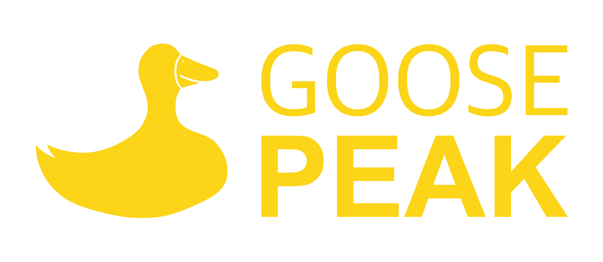

Now
지금, 이렇게 일합니다
 Claude
Claude
 Codex
Codex
AI를 팀원으로 씁니다
반복 구현은 AI가, 방향과 판단은 제가 합니다.
Claude와 Codex를 옆에 두고,
혼자서도 팀의 속도로 만듭니다.

기업에 필요한 것을 만듭니다
화려한 기술보다 비즈니스에 필요한 것이 먼저입니다.
MVP로 빠르게 검증하고, 운영하면서 다듬습니다.
EzDegree와 모두출판이 그렇게 만들어졌습니다.
경험이 방향을 잡습니다
AI가 아무리 빨라도, 무엇을 만들지는 사람이 정합니다.
공공 SI 7개 프로젝트부터 스타트업 CTO 4년까지,
9년의 실전 경험이 그 판단의 근거입니다.
밀도 높은 병렬 업무, 제품에 심은 AI, 아이디어의 즉시 서비스화까지 —
AI와 일하는 방식 자세히 보기